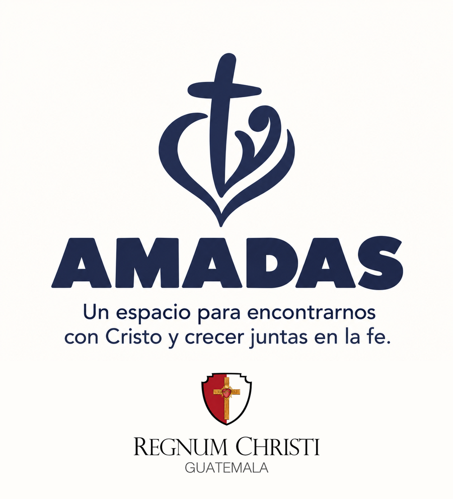

Un espacio para encontrarnos con Cristo y crecer juntas en la fe.
Un encuentro cada miércoles, con oración, formación y comunidad. Todas las mujeres son bienvenidas.

Todas somos amadas
Distintas realidades, una misma necesidad de encontrarnos con Cristo. Hay mujeres solteras, madres solteras, divorciadas, con novio, próximas a casarse, o casadas cuyos esposos aún no comparten su camino de fe. Nuestra dignidad no depende del estado civil ni de la etapa de la vida: Dios te ama y te conoce por tu nombre.
Acogida
Un espacio abierto donde cada mujer se siente acogida, escuchada y acompañada.
Encuentro
Una oportunidad constante de acercarnos a Cristo, orar y compartir la fe.
Comunidad
Mujeres que se acompañan y caminan juntas hacia Dios.
Un camino de crecimiento
Queremos crear una comunidad de mujeres que, por medio de la oración, el encuentro personal con Cristo y la formación católica, fortalezcan su fe y la lleven a su vida cotidiana. Una mujer cercana a Dios puede ser luz para sus hijos, su pareja, su familia y su entorno.
Oración
Aprender a dialogar con Dios y fortalecer nuestra vida interior.
Formación
Conocer nuestra Iglesia y comprender lo que creemos.
Encuentro con Cristo
Escuchar su Palabra, compartir y llevar la fe a la vida.
Comunidad
Construir vínculos de confianza, acogida y servicio.
Nuestros encuentros
Nos reunimos los miércoles, de 6:00 a 7:30 p.m. Cada mes sigue el mismo ciclo, semana por semana.
Sede de Regnum Christi: 17 calle 9-38, zona 10, Ciudad de Guatemala.
Para formar parte, es necesario llenar el formulario de registro.
-
Primer miércoles
Encuentro con Cristo
Oración, Palabra de Dios, reflexión y vida compartida.
-
Segundo miércoles
Retiro espiritual
Santa Misa, homilía, meditación y encuentro con Jesús Sacramentado.
-
Tercer miércoles
Formación católica
Conocer y profundizar en la fe que profesamos.
-
Cuarto miércoles
Encuentro con Cristo
Oración, Palabra de Dios, reflexión y vida compartida.
No podemos amar lo que no conocemos
Conocer nuestra fe para amarla, vivirla y transmitirla. Queremos un programa de formación progresivo, no únicamente charlas aisladas: la Biblia, la doctrina, los sacramentos y la vida espiritual, de la mano de sacerdotes, consagradas y laicos preparados.
Una puerta de entrada a una vida de fe más profunda
Acompañamos a las mujeres para que descubran nuevas formas de vivir su fe y de servir dentro de la Iglesia, de la mano de Regnum Christi.
Conocer
La misión y la espiritualidad de Regnum Christi.
Participar
Sus apostolados y actividades.
Servir
Descubrir tus talentos para el servicio.
Preguntas frecuentes
¿Necesito ser de Regnum Christi?
No. Toda mujer es bienvenida, sea o no parte de Regnum Christi.
¿Puedo ir sola?
Sí. Muchas mujeres llegarán solas, y la idea es que aquí encuentres compañía.
¿Importa mi estado civil o la etapa de vida en que estoy?
No. Estás invitada tal como eres.
¿Y si tengo dudas o hace tiempo que no me acerco a la Iglesia?
Puedes venir con tus preguntas. El camino se hace paso a paso.
¿Cuándo y dónde son los encuentros?
Los miércoles de 6:00 a 7:30 p.m., en la sede de Regnum Christi: 17 calle 9-38, zona 10. Cada mes: el primer miércoles, encuentro con Cristo; el segundo, retiro espiritual; el tercero, formación católica; y el cuarto, encuentro con Cristo. Para formar parte, llena el formulario y te avisaremos del siguiente encuentro.
¿Tiene costo?
Te compartiremos los detalles antes del siguiente encuentro.
Quiero participar
Déjanos tus datos y te avisaremos del siguiente encuentro. Si quieres formar parte, es necesario que llenes el formulario.
Llenar el formulario de registro
¿Prefieres escribirnos? Por WhatsApp o por correo:
Usaremos tus datos solo para invitarte a los encuentros de AMADAS.